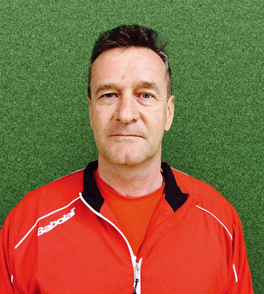

Адрес: MARLER TENNIS AKADEMIE, FRIEDRIECHSTR. 22, 45772, MARL, GERMANY
Телефон: +49 178 7175486
Адрес: MARLER TENNIS AKADEMIE, FRIEDRIECHSTR. 22, 45772, MARL, GERMANY
Телефон: +49 178 7175486
Marler Tennis Akademie

Cоздана в 2005 основой целью академии является развитие и популяризация российской теннисной школы за рубежом.
Наша Теннисная Академия создает все необходимые условия для профессиональной подготовки игроков высокого уровня. Развитие индивидуальных качеств игрока, его технических и тактических навыков, общефизической готовности и психологической подготовки являются основными составляющими тренировочного процесса. Видео анализ, теоритические занятия, дополнительные индивидуальные занятия с тренером, а также сопровождение и участие в турнирах различного ранга завершают комплексную организацию этого процесса.
Тренерами нашей академии накоплен большой опыт тренерской работы, выработаны собственные уникальные методики подготовки, воспитано много игроков любителей и профессионалов.
Cпециализация академии является - профессиональная подготовка и организация тренировочного процесса для всех игроков желающих значительно повысить свой уровень игры.
Помимо профессиональной подготовки нашей академией проработанно и организованно обучение детей с юнных лет, начиная с подготовительных занятий для 5-6 летних, переход от них к более интенсивным для 7-10 летних и далее целенаправленным от 11-12 лет.
Так же нами организуются турниры и совместные мероприятия с нашими клубами партнерами, проводятся тренировочные сборы.
Наша Академия уже сотрудничает с различными учебными заведениями и Теннисными Клубами.
Место расположения основной летней тренировочной базы: Germany, Dortmund Johannes-Gronowski str.20, а также собственной в Germany, Dorsten Midlicher Kamp 11



 Marler Tennis Akademie
Marler Tennis Akademie
 Marler Tennis Akademie
Marler Tennis Akademie
2023
© Все права защищены